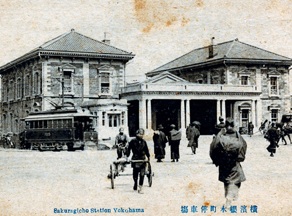
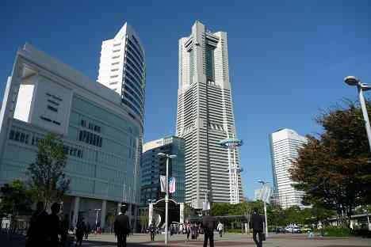
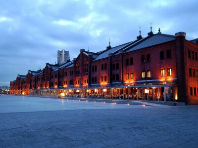
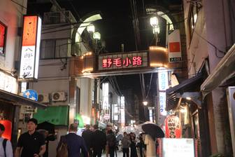

桜木町駅
桜木町駅は、1872年に日本初の鉄道が新橋～横浜間で開通した際の「初代横浜駅」として誕生した、鉄道発祥の地として知られています。駅周辺には鉄道の歴史を伝えるモニュメントや展示が点在し、歴史好きにはたまらないスポットです。駅名が「桜木町駅」となったのは1915年で、現在も横浜の玄関口として多くの人に親しまれています。
駅の東口を出ると、近代的なみなとみらいエリアが広がっています。ランドマークタワーや大観覧車「コスモクロック21」、都市型ロープウェイ「YOKOHAMA AIR CABIN」など、横浜を象徴する観光スポットが徒歩圏内に集まっています。汽車道という海上遊歩道を歩けば、横浜港の景色やみなとみらいの夜景を楽しめるのも魅力です。
また、桜木町駅周辺には横浜赤レンガ倉庫や日本丸メモリアルパークなど、歴史的建造物や文化施設も充実しています。赤レンガ倉庫ではショッピングやグルメ、季節ごとのイベントも開催され、観光客だけでなく地元の人々にも人気のスポットです。
駅の西口側には、昭和レトロな雰囲気が残る野毛エリアが広がり、個性的な飲食店や居酒屋が軒を連ねています。歴史と現代が融合した桜木町駅周辺は、散策や観光、グルメまで幅広く楽しめる横浜屈指の見どころエリアです。